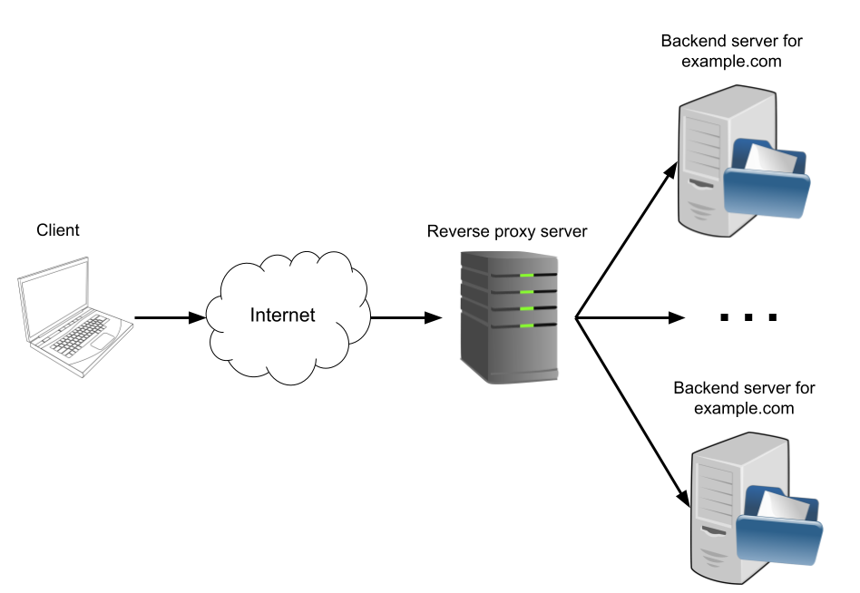

Proxy servers are an interesting and important part of network programming. This post is the first in a series describing how to implement simple proxy servers in Go and how to work with existing proxy servers.
Here is a list of posts in the series:
- Part 1 - HTTP Proxies (this part)
- Part 2 - HTTPS Proxies
- Part 3 - SOCKS Proxies
For simplicity, this post focuses on unencrypted HTTP traffic. More advanced proxying techniques with encryption will be covered in subsequent posts. The full code of all the samples presented here is available on GitHub.
Forward and reverse proxies
Let's begin with the Wikipedia description for what a proxy server is:
In computer networking, a proxy server is a server application that acts as an intermediary between a client requesting a resource and the server providing that resource.
Proxies can be typically divided into two categories: forward proxies (or just "proxies", but we'll use forward explicitly here to make things clearer) and reverse proxies. The difference between the two is quite subtle and worth spending a couple of minutes on.
This diagram shows what a forward proxy server does:
The "Internet" blob is an arbitrary collection of network switches, routers and other proxy servers. These days many HTTP requests go through several such "relays" the user is probably unaware of. What the diagram shows is that a forward proxy server typically sits between the user and the internet. These servers have many uses; for example:
- Enforcing browsing restrictions at the company/school or even national level
- Overcoming browsing restrictions by connecting to a proxy server instead of the target website directly
- Protecting the identity of users online by anonymizing traffic; instead of traffic coming from a specific user, it comes from a proxy that has many users connecting through it [1]
- Ancillary services like logging, caching, monitoring and debugging
A reverse proxy, on the other hand, can be seen as interjecting between the internet and backend servers:
Reverse proxies are typically installed in front of servers by the implementers of a service, and are transparent to users. They can also play multiple roles:
- Load balancing for high-traffic servers. This can even be globally distributed, wherein a reverse proxy will automatically direct a user to the server that's closest to them geographically
- Protection from DDoS attacks
- TLS termination, wherein the reverse proxy is responsible for secure communication with clients, while internal backend servers don't require encryption (for performance and other reasons)
- Ancillary services like logging, caching, monitoring and debugging
A prominent example of reverse proxies are CDNs like Cloudflare. If you connect to pretty much any large internet website/application these days, you're almost certainly going through one or more reverse proxy servers.
A more technical way to see the difference between forward and reverse proxies is to consider it from a developer's point of view. When a client sends a request to a server, a forward proxy sits in front of the client. The client accesses many different servers through this proxy. On the other side, before a client's request makes to to a server, a reverse proxy intercepts it on the server side and may redirect or modify it in some way. A reverse proxy typically answers queries at a single address, but will get contacted by multiple clients.
Using an off-the-shelf reverse proxy
Enough theory, let's do some experiments. We'll start by discussing reverse proxies, because I feel these are generally more common and useful for developers to understand.
Throughout this post, we'll be using this simple HTTP server as a backend to try different setups:
func main() {
addr := flag.String("addr", "127.0.0.1:8080", "listen address")
flag.Parse()
http.HandleFunc("/",
func(w http.ResponseWriter, req *http.Request) {
var b strings.Builder
fmt.Fprintf(&b, "%v\t%v\t%v\tHost: %v\n", req.RemoteAddr, req.Method, req.URL, req.Host)
for name, headers := range req.Header {
for _, h := range headers {
fmt.Fprintf(&b, "%v: %v\n", name, h)
}
}
log.Println(b.String())
fmt.Fprintf(w, "hello %s\n", req.URL)
})
log.Println("Starting server on", *addr)
if err := http.ListenAndServe(*addr, nil); err != nil {
log.Fatal("ListenAndServe:", err)
}
}
It answers every HTTP route with a successful "hello <route>" response and dumps information about the HTTP request it receives to the log. For example, if we run it with the default port, and then try to access a route with curl:
$ curl localhost:8080/foo/bar/50
hello /foo/bar/50
The server prints something like this:
2022/10/19 05:34:41 Starting server on 127.0.0.1:8080
2022/10/19 05:35:07 127.0.0.1:35106 GET /foo/bar/50 Host: localhost:8080
User-Agent: curl/7.81.0
Accept: */*
We're now ready for a more advanced setup. Let's install Caddy and use it as a reverse proxy. Since we know our backend listens on port 8080, we'll run Caddy like this:
caddy reverse-proxy --from :9090 --to :8080
It will listen to port 9090 and forward everything it gets to 8080. We can curl to port 9090:
$ curl localhost:9090/hi/there
hello /hi/there
And we get a response from our server; in the server's terminal, we'll see more logging emitted for this new request. This is as simple as it gets. It may not seem useful on its own, but this setup can be easily extended to be much more advanced; for example:
- Caddy will automatically proxy HTTPS from the client to the backend server as HTTP. This is called "TLS termination", and it means that our backend doesn't have to deal with TLS and certificates.
- Caddy can be configured to serve as a load balancer in reverse-proxy mode, with different balancing strategies, health checks to the backend and so on.
Setting up our own reverse proxy in Go
It's useful to see a commercial-grade tool in action, but it will be more educational to roll our own. The Go standard library makes it pretty easy with the net/http/httputil package which provides a ReverseProxy type and a simple constructor named NewSingleHostReverseProxy to implement the kind of forwarding shown in the previous section. To create a simple reverse proxy that forwards from one address to another, all we need to write is:
func main() {
fromAddr := flag.String("from", "127.0.0.1:9090", "proxy's listening address")
toAddr := flag.String("to", "127.0.0.1:8080", "the address this proxy will forward to")
flag.Parse()
toUrl := parseToUrl(*toAddr)
proxy := httputil.NewSingleHostReverseProxy(toUrl)
log.Println("Starting proxy server on", *fromAddr)
if err := http.ListenAndServe(*fromAddr, proxy); err != nil {
log.Fatal("ListenAndServe:", err)
}
}
// parseToUrl parses a "to" address to url.URL value
func parseToUrl(addr string) *url.URL {
if !strings.HasPrefix(addr, "http") {
addr = "http://" + addr
}
toUrl, err := url.Parse(addr)
if err != nil {
log.Fatal(err)
}
return toUrl
}
If we run this proxy in a terminal, listening on its default port of 9090:
$ go run basic-reverse-proxy.go
2022/10/20 22:13:00 Starting proxy server on 127.0.0.1:9090
And with our debugging server still listening on 8080, curl requests will be redirected by the proxy to the server.
The ReverseProxy type is fairly versatile and can be extensively configured with several user-defined functions. NewSingleHostReverseProxy itself is implemented as a custom Director field on this type. We can go one step further and implement a very simplistic "load-balancing" reverse proxy that round-robins between two backend servers. Here's the interesting code snippet (the full code is here):
func main() {
fromAddr := flag.String("from", "127.0.0.1:9090", "proxy's listening address")
toAddr1 := flag.String("to1", "127.0.0.1:8080", "the first address this proxy will forward to")
toAddr2 := flag.String("to2", "127.0.0.1:8081", "the second address this proxy will forward to")
flag.Parse()
toUrl1 := parseToUrl(*toAddr1)
toUrl2 := parseToUrl(*toAddr2)
proxy := loadBalancingReverseProxy(toUrl1, toUrl2)
log.Println("Starting proxy server on", *fromAddr)
if err := http.ListenAndServe(*fromAddr, proxy); err != nil {
log.Fatal("ListenAndServe:", err)
}
}
func loadBalancingReverseProxy(target1, target2 *url.URL) *httputil.ReverseProxy {
var targetNum = 1
director := func(req *http.Request) {
var target *url.URL
// Simple round robin between the two targets
if targetNum == 1 {
target = target1
targetNum = 2
} else {
target = target2
targetNum = 1
}
req.URL.Scheme = target.Scheme
req.URL.Host = target.Host
req.URL.Path, req.URL.RawPath = joinURLPath(target, req.URL)
// For simplicity, we don't handle RawQuery or the User-Agent header here:
// see the full code of NewSingleHostReverseProxy for an example of doing
// that.
}
return &httputil.ReverseProxy{Director: director}
}
This proxy expects two backend servers to be provided with the --to1 and --to2 flags. It then uses a custom Director to redirect HTTP requests to these two addresses in a simple round-robin fashion.
If we run two debugging servers on ports 8080 and 8081, and this proxy on its default port 9090, then curl requests to port 9090 will reach the debugging servers in turns. Try it out!
As an exercise, extend this reverse proxy to include all the functionality from NewSingleHostReverseProxy (we skipped some fields for brevity), and implement a more sophisticated load-balancing policy with an arbitrary number of backends. For inspiration, see the documentation of Caddy's reverse_proxy configuration.
A simple forward proxy
Now that we've seen a few examples of setting up reverse proxies, let's turn our attention to forward proxies. In many ways, the two are similar - both are servers that take requests from clients and forward them to other servers. But there are a few interesting differences to point out; also, it's a good opportunity to demonstrate some subtleties proxy servers have to handle by implementing them ourselves instead of relying on an existing type.
First, we'll need a quick detour to discuss HTTP. HTTP is a textual protocol on top of TCP. When a client connects to a server, it sends a request with some optional headers and body (which can be arbitrary bytes). The server responds with text of its own - a code (200 for success, 404 for "not found" etc.), response headers and body.
When we run curl http://example.org/some/path, what curl does is:
- Resolve the example.org domain to an IP address [2]
- Create a TCP connection to this address at port 80 (the default port for HTTP)
- Send an HTTP GET request
The request curl sends looks something like:
GET /some/path HTTP/1.1
Host: example.org
User-Agent: curl/7.81.0
Accept: */*
Since it knows what server it connected to, and the server knows who it is, the path given to the GET request is relative (ignore the Host: header for a bit, we'll discuss it later). However, when a client connects through a forward proxy, things are not as straightforward. If a proxy receives a relative path, it doesn't know where to forward the request! Therefore, for proxies the HTTP/1.1 standard requires clients to use an absolute URL.
Say we set up a local proxy to run on port 9999 (details on how to do that will follow shortly), and direct curl to use it by setting the http_proxy environment variable:
$ http_proxy=http://localhost:9999 curl http://example.org/foo/bar
Now the request curl sends looks like this:
GET http://example.org/foo/bar HTTP/1.1
Host: example.org
User-Agent: curl/7.81.0
Accept: */*
Proxy-Connection: Keep-Alive
Note the absolute path provided in the GET request. This tells the proxy where to forward the request.
With that in mind, let's code a simple forward proxy in Go (full code here). The main part of the code is proxyHandler, which is a type implementing the http.Handler interface:
type forwardProxy struct {
}
func (p *forwardProxy) ServeHTTP(w http.ResponseWriter, req *http.Request) {
// The "Host:" header is promoted to Request.Host and is removed from
// request.Header by net/http, so we print it out explicitly.
log.Println(req.RemoteAddr, "\t\t", req.Method, "\t\t", req.URL, "\t\t Host:", req.Host)
log.Println("\t\t\t\t\t", req.Header)
if req.URL.Scheme != "http" && req.URL.Scheme != "https" {
msg := "unsupported protocal scheme " + req.URL.Scheme
http.Error(w, msg, http.StatusBadRequest)
log.Println(msg)
return
}
client := &http.Client{}
// When a http.Request is sent through an http.Client, RequestURI should not
// be set (see documentation of this field).
req.RequestURI = ""
removeHopHeaders(req.Header)
removeConnectionHeaders(req.Header)
if clientIP, _, err := net.SplitHostPort(req.RemoteAddr); err == nil {
appendHostToXForwardHeader(req.Header, clientIP)
}
resp, err := client.Do(req)
if err != nil {
http.Error(w, "Server Error", http.StatusInternalServerError)
log.Fatal("ServeHTTP:", err)
}
defer resp.Body.Close()
log.Println(req.RemoteAddr, " ", resp.Status)
removeHopHeaders(resp.Header)
removeConnectionHeaders(resp.Header)
copyHeader(w.Header(), resp.Header)
w.WriteHeader(resp.StatusCode)
io.Copy(w, resp.Body)
}
func main() {
var addr = flag.String("addr", "127.0.0.1:9999", "proxy address")
flag.Parse()
proxy := &forwardProxy{}
log.Println("Starting proxy server on", *addr)
if err := http.ListenAndServe(*addr, proxy); err != nil {
log.Fatal("ListenAndServe:", err)
}
}
Here's a walkthrough of what ServeHTTP does:
- Print out the request for debugging
- Massage the request headers in accordance with proxy behavior (more on this later)
- Create a http.Client and use it to execute the request. The Request.URL field is already populated to exactly what we need!
- Massage the response headers in accordance with proxy behavior
- Copy the headers and the response body from the client created in step (3) to the proxy response
For the additional functions used here, look in the full code. The most important work they do is remove some special headers if they exist. With modern HTTP routes that include multiple proxies, some headers are meant to go end-to-end, but others are only meant to go between a single set of TCP peers. These latter headers are called "hop by hop" headers, and the proxy is not supposed to forward them.
Additionally, this proxy properly updates the X-forwarded-for header (see this MDN page for details).
Let's see this proxy in action. We'll start it in a new terminal, to listen on its default port (9999):
$ go run basic-forward-proxy.go
2022/10/21 19:28:02 Starting proxy server on 127.0.0.1:9999
And now we can run our curl in a separate terminal:
$ http_proxy=http://localhost:9999 curl http://example.org
<!doctype html>
<html>
...
... // the rest of the document
Looking at our proxy's terminal, it will print some logs similar to:
2022/10/21 19:29:52 127.0.0.1:40964 GET http://example.org/ Host: example.org
2022/10/21 19:29:52 map[Accept:[*/*] Proxy-Connection:[Keep-Alive] User-Agent:[curl/7.81.0]]
2022/10/21 19:29:52 127.0.0.1:40964 200 OK
Naturally, the proxy presented here is simplistic and should not be used in production. Production proxies have much better support for all the nuanced behaviors expected from proxy servers; most importantly, they have mitigations for various security risks and attacks. But the basics are here! This proxy simply forwards requests to the target server so it's not very useful on its own (beyond logging all activity, which also has some uses), but it should be easy to extend with features like blocking certain domains, etc.
Issuing HTTP requests in Go through a proxy
So far we've been talking about proxy servers and the backend servers they route requests to. In this section, let's look at the other side - how HTTP clients written in Go interact with proxies.
Here's a simple HTTP client written in Go - it issues an HTTP GET request to the URL of our choice and dumps the response status code and body to stdout:
func main() {
target := flag.String("target", "http://example.org", "URL to get")
flag.Parse()
resp, err := http.Get(*target)
if err != nil {
log.Fatal(err)
}
defer resp.Body.Close()
fmt.Println("Response status:", resp.Status)
body, err := ioutil.ReadAll(resp.Body)
if err != nil {
log.Fatal(err)
}
fmt.Println(string(body))
}
Here's a simple invocation:
$ go run http-get-basic.go --target http://example.org
Response status: 200 OK
<!doctype html>
<html>
...
... // the rest of the document
If you recall, to instruct curl to use a proxy all we had to do was set an environment variable named http_proxy. The same approach works for Go! If we run our forward proxy from the previous section on its default port (9999), we can invoke our client as follows:
$ http_proxy=localhost:9999 go run http-get-basic.go --target http://example.org
Response status: 200 OK
<!doctype html>
<html>
...
... // the rest of the document
And we'll see the proxy print out something like this to its log:
2022/10/22 06:47:45 GET http://example.org/ HTTP/1.1
Accept-Encoding: gzip
User-Agent: Go-http-client/1.1
So Go's HTTP machinery supports proxy-related environment variables out of the box. It also supports https_proxy for proxying HTTPS (more on this in a future part of this series), and the uppercase versions of both variables - HTTP_PROXY and HTTPS_PROXY. In addition, it supports no_proxy (and NO_PROXY) for listing domains that should never go through a proxy. While these variables are not in formal industry standards, they've very widely supported by tools [3]. If you're interested in the details, the Go standard library package dealing with these environment variables for Go is x/net/http/httpproxy.
When pointing Go HTTP clients at proxies, there's one important gotcha to be aware of. If you're developing your backend servers locally, you'll probably run into it. Go HTTP clients will not proxy localhost addresses (or their synonyms) by default, even if http_proxy is set.
If we run our debugging server on port 8080 and try to access it with the client through our proxy:
$ http_proxy=localhost:9999 go run http-get-basic.go --target http://localhost:8080/foo/bar
We'll see the server's response, but it comes directly from the server, not the proxy (you can verify this by looking at the proxy's logs). While this is inconvenient [4], there are easy workarounds.
Workaround 1 doesn't require us to touch any code, but does require mucking with the machine's network configuration. On Linux it's as simple as adding an alias in /etc/hosts:
127.0.0.1 local.alias
And now a request like this does go through the proxy:
$ http_proxy=localhost:9999 go run http-get-basic.go --target http://local.alias:8080/foo/bar
Workaround 2 leaves the machine configuration alone, but requires us to change how our HTTP client is initialized in Go. Go's http.Client can be configured with a http.Transport , which by default uses ProxyFromEnvironment for its proxy configuration. This is the function that handles variables like http_proxy and has the aforementioned special case. To avoid triggering this case, we'll use a custom proxy configuration in the transport as follows:
func main() {
target := flag.String("target", "http://example.org", "URL to get")
proxy := flag.String("proxy", "http://localhost:9999", "proxy to use")
flag.Parse()
proxyUrl, err := url.Parse(*proxy)
if err != nil {
log.Fatal(err)
}
client := &http.Client{
Transport: &http.Transport{Proxy: http.ProxyURL(proxyUrl)},
}
r, err := client.Get(*target)
if err != nil {
log.Fatal(err)
}
defer r.Body.Close()
body, err := ioutil.ReadAll(r.Body)
if err != nil {
log.Fatal(err)
}
fmt.Println(string(body))
}
With our proxy set up on port 9999 and the debugging server on port 8080, this new client accesses the server through the proxy successfully (see the proxy logs to be sure):
$ go run http-get-explicit-proxy.go --target http://localhost:8080/foo/bar
hello /foo/bar
Appendix A: Host headers
Sharp-eyed readers may have noticed some mentions of Host: headers in this post, specifically in debugging printouts from our proxy server and also from the requests sent by curl. Host headers arose as a way to enable "virtual hosting", where multiple domain names resolve to the same IP address. When the web server listening on that address receives a request, the request will have a relative URL [5] - but what domain is it aimed for? This is what the Host header on the request specifies.
These days the Host header is ubiquitous; MDN says:
A Host header field must be sent in all HTTP/1.1 request messages. A 400 (Bad Request) status code may be sent to any HTTP/1.1 request message that lacks or contains more than one Host header field.
Go's http package also has some special handling for the Host header. For example, an HTTP server will promote this header to the http.Request.Host field automatically; it also removes it from the http.Request.Header map. Go clients will set this header automatically in requests, taken from the URL passed to the request.
Appendix B: using a reverse proxy to implement a forward proxy
If the distinction between forward and reverse proxies still seems subtle, don't worry! It really is. At the end of the day, all proxies take requests and forward them to another server.
As another piece of evidence, consider this snippet which uses Go's builtin httputil.ReverseProxy to implement a forward proxy:
func proxyHandler(w http.ResponseWriter, r *http.Request) {
target, err := url.Parse(r.URL.Scheme + "://" + r.URL.Host)
if err != nil {
log.Fatal(err)
}
reqb, err := httputil.DumpRequest(r, true)
if err != nil {
log.Fatal(err)
}
log.Println(string(reqb))
p := httputil.NewSingleHostReverseProxy(target)
p.ServeHTTP(w, r)
}
func main() {
var addr = flag.String("addr", "127.0.0.1:9999", "proxy address")
flag.Parse()
http.HandleFunc("/", proxyHandler)
log.Println("Starting proxy server on", *addr)
if err := http.ListenAndServe(*addr, nil); err != nil {
log.Fatal("ListenAndServe:", err)
}
}
It extracts the target URL from the absolute path provided with the request and then uses NewSingleHostReverseProxy to reverse-proxy the request to that address.
I won't dwell on this example too much because this is an appendix, but you should now have all the information required to dissect it and understand exactly how it works.
| [1] | Though this can be problematic if you need strong security, since HTTP proxies are typically unencrypted. Using VPNs or specialized networks like Tor may be a better option. |
| [2] | We can do this step on its own by using the dig tool, e.g. dig example.org. |
| [3] | Their origin is all the way back from CERN libwww in 1994. See this blog post for more details. |
| [4] | Though it likely makes sense for security. Firefox also refuses to route localhost traffic through a proxy unless a special configuration variable named network.proxy.allow_hijacking_localhost is set to true. |
| [5] | You may wonder why we can't just always send the absolute URL, like what's done for proxies. Don't forget that HTTP evolved over time while trying to not break existing servers. Many old servers would expect to see relative paths and would break if requests with absolute paths arrived, so a different way had to be devised. |